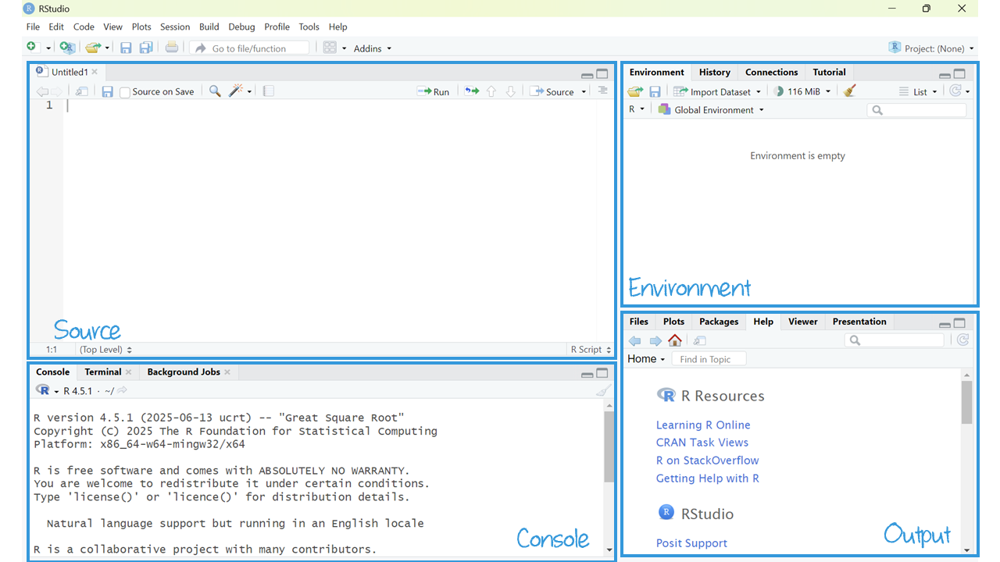
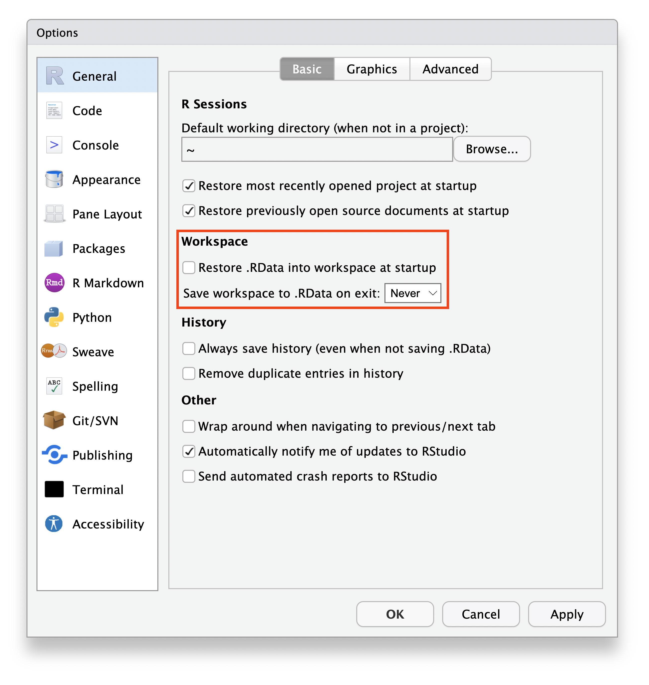
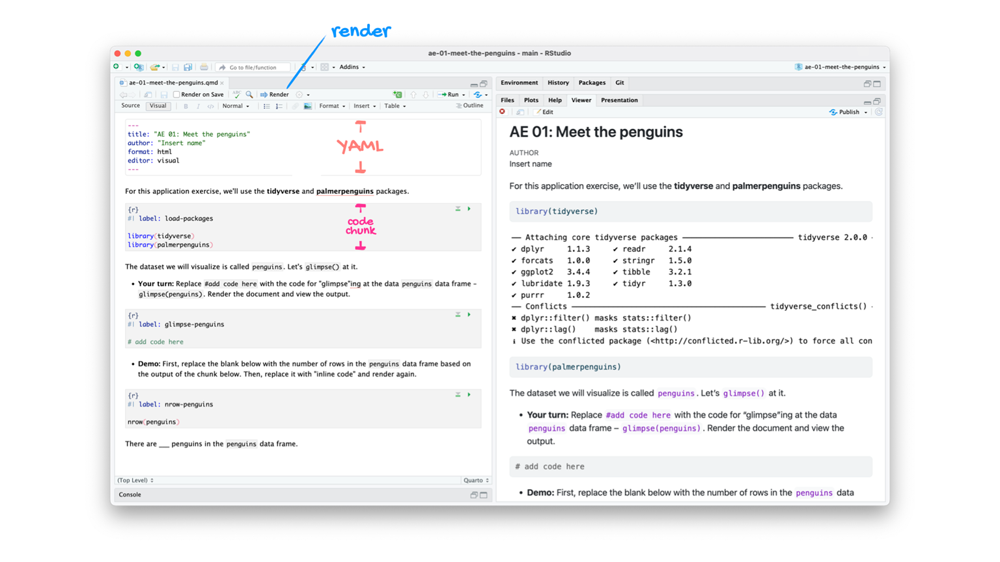
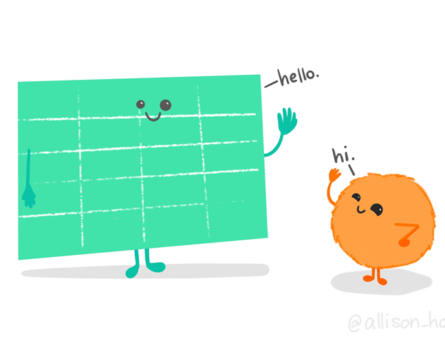

R workflow
Agenda
- R & RStudio Workflow
- Quarto
- Getting Started
Learning objectives
By the end of the lecture, you will be able to …
- setup a workflow using R and RStudio
- familiarize yourself with a dataset using R and RStudio
- create a reproducible report using Quarto
R & RStudio Tour
Tour: RStudio Panes
Sit back and enjoy the show!
Mini-task
Open a new R Script.
Click the dropdown arrow next to the “New File icon,” and then “R script”.
Mini-tasks
Type 2 + 2 in the Console. Then push Enter.
Type 2 + 2 in the R Script Then click Run.
Documentation


Mini-task
Add a comment above your 2 + 2 code in your R script. Then click Run.
Tour recap: Panes
There are four key regions or “panes” in the interface:
Source pane: where you can edit and save R scripts or author computational documents like Quarto and R Markdown.
Console pane: is used to write short interactive R commands.
Environment pane: displays temporary R objects created during that R session.
Output pane: displays the plots, tables, or HTML outputs of executed code along with files saved to disk.
Heads Up!
The top-left panel (source pane) and can be launched by opening any editable file in RStudio.

RStudio projects
Create a RStudio project for each data analysis project.
It supports an organized and reproducible workflow, cleanly separated from all other projects that you are working on. Everything you need in one place:
- local data files to load into RStudio.
- scripts to edit or run in bits or as a whole.
- Save your outputs (plots and cleaned data).
File types
There are many file types, but these are key to an R & RStudio workflow (and likely new to you):
| Extension | Description |
|---|---|
| .Rproj | RStudio project file (keeps project settings). |
| .R | R scripts store a sequence of R commands (code) that can be run all at once or line by line. |
| .qmd | Quarto Markdown creates reproducible documents that contain a combination of text, code, and output. |
| .Rdata (or sometimes .rda) | These store and load R objects—like data frames. |
Mini-task
Create a new project in RStudio.
Click: File > New Project.
In the New Project wizard that pops up, select: New Directory, then New Project.
Name the project “SOC6302”
Click Browse and save the project anywhere except your downloads folder.
Click: Create Project.
This will launch you into a new RStudio Project inside a new folder called “SOC6302”.
Mini-task
Clear the memory at every restart of RStudio.
Turn off theautomatic saving of your workspace and .Rdata files with you quit RStudio. This is important for reproducibility, debugging, and avoiding littering your computer with unnecessary files.
Set this via:
- Tools > Global Options.
- Uncheck “Restore .RData into Workspace at Startup”.
- Choose “Never” on the “Save workspace to .RData on exit”.
- Click “Apply” and “OK”.

Quarto
Quarto
The tool you’ll use to create reproducible computational documents. Every piece of assignment you hand in will be a Quarto document.
- Fully reproducible reports
- R code + narrative
RScript
great for learning, exploring and tinkering.
rerun it without attention to formatting or markdown.
Quarto
great for communicating analysis and results
combines narrative explanation with code output (results).
Tour: Quarto
Sit back and enjoy the show!
Tour recap: Quarto

Tour recap: Quarto Code-chunks

- chunk labels are helpful for describing what the code is doing, for jumping between code cells in the editor, and for troubleshooting
message: falsehides any messages emitted by the code in your rendered document
How will we use Quarto?
- Every code-along and milestone will be a Quarto document
- The scaffolding will decrease over the course
- You will create and submit a Quarto document for your research project
Your first code-along
Mini-task
Save this code-along in your newly created project folder.
There’s no command in the R console to save scripts or Quarto files— you use the editor’s File > Save As or Ctrl+S.
Getting Started
Comprehensive R Archive Network (CRAN)
CRAN is like an App Store for R. It hosts R packages, documentation, and source code contributed by users worldwide. It is mediated (e.g., quality controlled), making it incredibly reliable.
Packages
R comes with basic tools, but packages extend the capabilities of base R (what you already installed). An R package is like a toolbox: a collection of functions, data, and documentation that help you do specific tasks using R.
You’ll install each package (1X per system):
You’ll load each package (every time you use it):
Mini-task
Install the tidyverse() package, available on CRAN.
Run the code chunk in your code-along.
OR: Copy and paste the code into your Console pane. Then hit “Enter”.
Mini-tasks
Install the tinytex() package, available on CRAN.
Run the code chunk in your code-along.
OR: Copy and paste the code into your Console pane. Then hit “Enter”.
Mini-tasks
Install the gssr() package, NOT on CRAN.
Load the packages
Run the code chunk in your code-along.
Environment
Run the code chunk in your code-along.
R version 4.5.1 (2025-06-13 ucrt)
Platform: x86_64-w64-mingw32/x64
Running under: Windows 11 x64 (build 26100)
Matrix products: default
LAPACK version 3.12.1
locale:
[1] LC_COLLATE=English_Canada.utf8 LC_CTYPE=English_Canada.utf8
[3] LC_MONETARY=English_Canada.utf8 LC_NUMERIC=C
[5] LC_TIME=English_Canada.utf8
time zone: America/Toronto
tzcode source: internal
attached base packages:
[1] stats graphics grDevices utils datasets methods base
other attached packages:
[1] gssrdoc_0.7.0 conflicted_1.2.0 summarytools_1.1.4 flextable_0.9.7
[5] kableExtra_1.4.0 labelled_2.14.1 haven_2.5.5 gssr_0.7
[9] lubridate_1.9.4 forcats_1.0.0 stringr_1.5.1 dplyr_1.1.4
[13] purrr_1.0.4 readr_2.1.5 tidyr_1.3.1 tibble_3.3.0
[17] ggplot2_3.5.2 tidyverse_2.0.0
loaded via a namespace (and not attached):
[1] gtable_0.3.6 xfun_0.52 tzdb_0.5.0
[4] vctrs_0.6.5 tools_4.5.1 generics_0.1.4
[7] curl_6.3.0 pacman_0.5.1 pkgconfig_2.0.3
[10] data.table_1.17.6 checkmate_2.3.2 pryr_0.1.6
[13] RColorBrewer_1.1-3 uuid_1.2-1 lifecycle_1.0.4
[16] compiler_4.5.1 farver_2.1.2 rapportools_1.2
[19] textshaping_1.0.1 codetools_0.2-20 fontquiver_0.2.1
[22] fontLiberation_0.1.0 htmltools_0.5.8.1 yaml_2.3.10
[25] pillar_1.11.0 MASS_7.3-65 openssl_2.3.3
[28] cachem_1.1.0 magick_2.8.7 fontBitstreamVera_0.1.1
[31] tidyselect_1.2.1 zip_2.3.3 digest_0.6.37
[34] stringi_1.8.7 reshape2_1.4.4 pander_0.6.6
[37] fastmap_1.2.0 grid_4.5.1 cli_3.6.5
[40] magrittr_2.0.3 base64enc_0.1-3 withr_3.0.2
[43] backports_1.5.0 gdtools_0.4.1 scales_1.4.0
[46] timechange_0.3.0 rmarkdown_2.29 officer_0.6.7
[49] matrixStats_1.5.0 askpass_1.2.1 ragg_1.4.0
[52] hms_1.1.3 memoise_2.0.1 evaluate_1.0.4
[55] knitr_1.50 tcltk_4.5.1 viridisLite_0.4.2
[58] rlang_1.1.6 Rcpp_1.0.14 glue_1.8.0
[61] xml2_1.3.8 svglite_2.1.3 rstudioapi_0.17.1
[64] jsonlite_2.0.0 plyr_1.8.9 R6_2.6.1
[67] systemfonts_1.2.3 fs_1.6.6 Meet your data

We’re going to use data from the U.S. General Social Survey (GSS).
Load some data
Run the code chunk in your code-along.
# A tibble: 3,309 × 639
year id wrkstat hrs1 hrs2 evwork marital martype
<dbl+l> <dbl> <dbl+l> <dbl+lbl> <dbl+lbl> <dbl+lbl> <dbl+l> <dbl+lbl>
1 2024 1 1 [wor… 43 NA(i) [iap] NA(i) [iap] 5 [nev… NA(i) [iap]
2 2024 2 5 [ret… NA(i) [iap] NA(i) [iap] 1 [yes] 5 [nev… NA(i) [iap]
3 2024 3 5 [ret… NA(i) [iap] NA(i) [iap] 1 [yes] 1 [mar… 1 [mar…
4 2024 4 2 [wor… 20 NA(i) [iap] NA(i) [iap] 5 [nev… NA(i) [iap]
5 2024 5 5 [ret… NA(i) [iap] NA(i) [iap] 1 [yes] 3 [div… NA(i) [iap]
6 2024 6 4 [une… NA(i) [iap] NA(i) [iap] NA(i) [iap] 1 [mar… 1 [mar…
7 2024 7 1 [wor… 80 NA(i) [iap] NA(i) [iap] 1 [mar… 1 [mar…
8 2024 8 6 [in … NA(i) [iap] NA(i) [iap] 1 [yes] 3 [div… NA(i) [iap]
9 2024 9 1 [wor… 50 NA(i) [iap] NA(i) [iap] 1 [mar… NA(i) [iap]
10 2024 10 4 [une… NA(i) [iap] NA(i) [iap] NA(i) [iap] 5 [nev… NA(i) [iap]
# ℹ 3,299 more rows
# ℹ 631 more variables: divorce <dbl+lbl>, widowed <dbl+lbl>,
# spwrksta <dbl+lbl>, sphrs1 <dbl+lbl>, sphrs2 <dbl+lbl>, spevwork <dbl+lbl>,
# cowrksta <dbl+lbl>, coevwork <dbl+lbl>, cohrs1 <dbl+lbl>, cohrs2 <dbl+lbl>,
# sibs <dbl+lbl>, childs <dbl+lbl>, age <dbl+lbl>, educ <dbl+lbl>,
# speduc <dbl+lbl>, coeduc <dbl+lbl>, codeg <dbl+lbl>, degree <dbl+lbl>,
# padeg <dbl+lbl>, madeg <dbl+lbl>, spdeg <dbl+lbl>, sex <dbl+lbl>, …Browse dataframe
Open the gss24 dataframe.
With your mouse, go to the environment panel (upper-right) and click on the gss24 object. It opens in a tab on the source pane.
This is often a good idea to browse data to get a first feel for the data, but only if your dataset is relatively small.

Variable documentation
The GSS documentation is available online in .pdf form.
Because we loaded the gssrdoc package, for information about a specific GSS variable:
type ?varname at the console.
In the output pane, the Help tab will show the variable documentation.
Heads Up!
Replace “varname” with the name of a variable.
Example: ?meovrwrk
Variable documentation example
meovrwrk {gssrdoc} R Documentation
Men hurt family when focus on work too much
Description
meovrwrk
Details
Question 1297. And, do you agree or disagree: c. Family life often suffers because men concentrate too much on their work.
Overview
For further details see the official GSS documentation.
Counts by year:
year iap agree can't choose disagree neither agree nor disagree no answer strongly agree strongly disagree skipped on web Total
1972 1613 - - - - - - - - 1613
1973 1504 - - - - - - - - 1504
1974 1484 - - - - - - - - 1484
1975 1490 - - - - - - - - 1490
1976 1499 - - - - - - - - 1499
1977 1530 - - - - - - - - 1530
1978 1532 - - - - - - - - 1532
1980 1468 - - - - - - - - 1468
1982 1860 - - - - - - - - 1860
1983 1599 - - - - - - - - 1599
1984 1473 - - - - - - - - 1473
1985 1534 - - - - - - - - 1534
1986 1470 - - - - - - - - 1470
1987 1819 - - - - - - - - 1819
1988 1481 - - - - - - - - 1481
1989 1537 - - - - - - - - 1537
1990 1372 - - - - - - - - 1372
1991 1517 - - - - - - - - 1517
1993 1606 - - - - - - - - 1606
1994 1545 695 33 243 286 27 122 41 - 2992
1996 1444 825 16 198 169 1 230 21 - 2904
1998 2832 - - - - - - - - 2832
2000 940 877 43 361 331 22 209 34 - 2817
2002 1857 415 6 264 108 - 99 16 - 2765
2004 1906 460 4 188 135 - 94 25 - 2812
2006 2518 945 14 477 304 1 208 43 - 4510
2008 694 653 12 310 161 - 143 50 - 2023
2010 614 662 6 388 192 3 122 57 - 2044
2012 672 558 11 382 170 - 130 51 - 1974
2014 863 702 7 479 234 1 176 76 - 2538
2016 979 819 9 536 257 - 171 96 - 2867
2018 789 644 11 475 220 2 134 73 - 2348
2021 1315 886 1 487 1001 - 202 138 2 4032
2022 1168 885 15 537 618 1 201 117 2 3544
2024 1126 787 19 481 611 - 195 89 1 3309
Total 50650 10813 207 5806 4797 58 2436 927 5 75699
Values
1 strongly agree
2 agree
3 neither agree nor disagree
4 disagree
5 strongly disagree
NA(d) can't choose
NA(i) iap
NA(j) I don't have a job
NA(m) dk, na, iap
NA(n) no answer
NA(p) not imputable
NA(r) refused
NA(s) skipped on web
NA(u) uncodeable
NA(x) not available in this release
NA(y) not available in this year
NA(z) see codebook
Source
General Social Survey https://gss.norc.org
[Package gssrdoc version 0.7.0 Index]Variables
You can access the variables (i.e., columns) using the $ operator, as shown using the table() function. The variable names are case sensitive.
195 respondents were coded as 1 on this variable. What does that mean?
Mini-tasks
Change the code to show the variable fefam.
add text to your code-along that interprets the results for the 2 value for fefam.
Quarto: Render
Finally, let’s render your code-along-01 and see the results!
Heads Up!
Click the down arrow next to render to choose whether to preview within RStudio’s Viewer Pane or in your browser.
Support
Some help videos and further explanation: